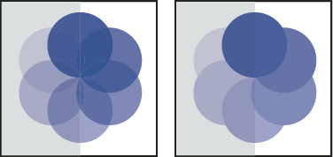

Create a transparency knockout group
In a transparency knockout group, the elements of a group do not show through each other.

Group with Knockout Group option deselected (left) compared to
selected (right)
In a transparency knockout group, the elements of a group do not show through each other.
